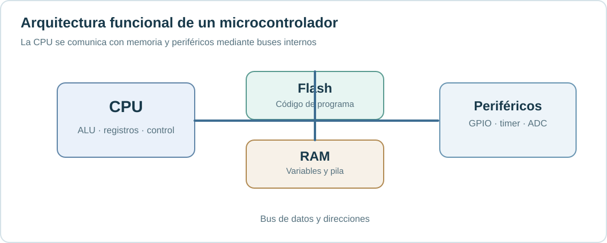
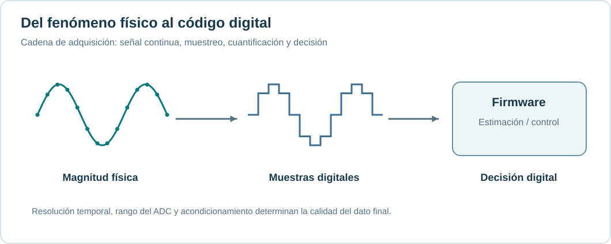
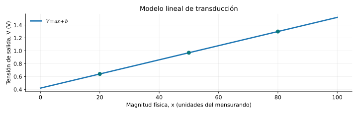
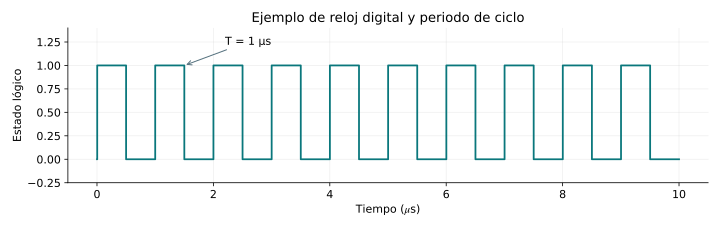

Introducción a los microcontroladores
Fundamentos y cadena funcional.
120 + 120 + 60 minMSP430G2553Resultados de aprendizaje
- Distinguir un microcontrolador de una computadora de propósito general y reconocer sus aplicaciones.
- Identificar las funciones de CPU, memoria, periféricos, ADC y puertos digitales.
- Interpretar una cadena de medida y aplicar un modelo lineal de calibración.
- Relacionar frecuencia de reloj, ciclos de ejecución y periodo de adquisición.
Microcontroladores y sistemas embebidos
Una computadora de propósito general está concebida para ejecutar aplicaciones diferentes sobre un sistema operativo, con memoria, almacenamiento y periféricos normalmente distribuidos en varios circuitos. En cambio, un sistema embebido está integrado en un producto con una tarea definida: medir temperatura, controlar un motor, gestionar iluminación o supervisar un equipo. La elección de hardware y software responde a requisitos de coste, energía, tiempo de respuesta y fiabilidad.
El microcontrolador es un circuito integrado programable que reúne procesador, memorias, reloj y periféricos de entrada/salida. Se utiliza cuando la aplicación necesita actuar directamente sobre señales del entorno. No debe confundirse con el microprocesador: ambos ejecutan instrucciones, pero un microprocesador suele requerir más dispositivos externos para constituir un sistema operativo completo.
| Criterio | Microcontrolador | Computadora de propósito general |
|---|---|---|
| Aplicación | Control y medición especializados | Múltiples programas y tareas |
| Integración | CPU, memoria y periféricos en un chip | CPU y subsistemas de mayor escala |
| Consumo | Puede optimizarse para batería y reposo | Generalmente mayor |
| Interacción | Sensores, actuadores y comunicaciones | Pantalla, teclado y redes complejas |
Arquitectura funcional de un microcontrolador

En el MSP430G2553, la CPU, las memorias y los periféricos están integrados en el mismo circuito y se comunican mediante recursos internos. Cada bloque cumple una función distinta, necesaria para comprender la ejecución del programa y la interacción con los pines.
La CPU lee y ejecuta instrucciones; la Flash conserva el programa sin alimentación; la RAM pierde su contenido al apagar; el reloj determina el ritmo de ejecución; el temporizador cuenta eventos o intervalos; y los GPIO permiten intercambiar estados digitales con el exterior. El ADC traduce una magnitud analógica a códigos digitales dentro de su rango y resolución especificados.
Los periféricos se configuran mediante registros accesibles desde el programa. A diferencia de una variable ordinaria en RAM, escribir ciertos registros puede modificar el estado de una salida, iniciar una conversión o habilitar una interrupción. Esta relación entre software y hardware será fundamental durante el curso.
Adquisición, procesamiento y actuación

En un sistema de medición, el sensor responde a una magnitud física y proporciona una señal que el microcontrolador puede adquirir mediante una entrada digital o un convertidor analógico-digital (ADC). El firmware interpreta el dato, evalúa las condiciones de operación y puede actualizar una salida, registrar la lectura o transmitirla.
Considere un termostato: la lectura del sensor se transforma en una estimación de temperatura y se compara con una consigna. La decisión del programa controla una salida que, mediante una etapa de potencia apropiada, gobierna el calentador. La CPU no procesa directamente la temperatura física; trabaja con datos obtenidos a través de la interfaz de medición.
Familias y elección de plataforma
Los microcontroladores difieren en tamaño de palabra, memoria, consumo, periféricos, encapsulado y herramientas de desarrollo. No existe una plataforma universalmente superior: el dispositivo adecuado es aquel que satisface las restricciones de una aplicación. En las prácticas se utiliza el MSP430G2553, perteneciente a la familia de microcontroladores de señales mixtas MSP430, con CPU RISC de 16 bits.
Antes de seleccionar un microcontrolador conviene elaborar una matriz de requisitos: número de entradas y salidas, resolución del ADC, interfaces UART/SPI/I²C, memoria de programa, RAM, voltaje de operación, costo y estrategias de ahorro de energía. También debe evaluarse el ecosistema de depuración, la disponibilidad de documentación y las condiciones de laboratorio.
| Pregunta de selección | Evidencia necesaria |
|---|---|
| ¿Cuántos sensores? | Número y naturaleza de las entradas |
| ¿Qué precisión y rapidez? | ADC, reloj y tasas de muestreo |
| ¿Funcionará con batería? | Corrientes activas y en reposo |
| ¿Habrá comunicaciones? | Protocolos disponibles |
| ¿Se puede depurar? | Herramientas y conectividad del kit |
Diseño de sistemas: especificaciones y restricciones
Una aplicación con microcontrolador comienza estableciendo requisitos verificables, no eligiendo de inmediato una tarjeta. Se debe identificar el mensurando o la variable controlada, el rango de operación, la precisión requerida, el tiempo máximo de respuesta, la disponibilidad de energía y la interfaz con personas u otros equipos. Una especificación útil es cuantitativa: «registrar una temperatura entre 20 y 80 °C cada segundo con error máximo de ±1 °C» permite seleccionar un sensor y evaluar el sistema. «Medir temperatura con un microcontrolador» no constituye una especificación suficiente.
El diseño debe distinguir entre requisitos funcionales (acciones que debe realizar) y restricciones no funcionales (consumo, costo, tamaño, confiabilidad y seguridad). Por ejemplo, dos soluciones pueden informar la misma temperatura, pero una consumir diez veces más energía. Si operan con batería, ese parámetro es decisivo. La validación debe revisar ambos grupos de requisitos.
Ejemplo guiado: contador de objetos
Imagine una banda transportadora con un sensor fotoeléctrico. Cuando pasa un objeto, la entrada cambia de nivel y el microcontrolador incrementa un contador. Para diseñarla, precisamos la duración mínima del pulso, frecuencia máxima de paso, tensión de salida del sensor, forma de presentación del conteo y tolerancia a ruido. Si el pulso dura 2 ms y el programa revisa el pin cada 10 ms, podría omitir eventos. Una solución es revisar con mayor frecuencia o utilizar interrupciones, previo análisis de rebote y ruido.
El diagrama funcional se convierte en un conjunto de pruebas: pulsos aislados, pulsos cercanos, perturbaciones y reinicios. Solo después de cumplirlas puede afirmarse que el prototipo satisface sus requisitos. Este razonamiento se aplicará durante el curso a medición, comunicaciones y control.
También deben definirse condiciones de falla: comportamiento ante un sensor desconectado, reinicio del equipo o salida que demande más corriente de la admisible. Estas situaciones forman parte de la verificación del diseño, no solo de la programación.
Señales analógicas y calibración
El fenómeno físico suele ser continuo, pero el microcontrolador representa información mediante números discretos. Si el sensor es analógico, una etapa de acondicionamiento establece el rango que recibe el ADC. Si el sensor es digital, debe definirse una interfaz (por ejemplo I²C, SPI o pulsos temporizados). En ambos casos es indispensable revisar niveles de tensión, referencia eléctrica y tiempo de adquisición.
Modelo de calibración lineal

Una aproximación útil para un sensor con respuesta lineal es relacionar la tensión de salida con la magnitud física. La pendiente expresa la sensibilidad en voltios por unidad de magnitud, mientras que el intercepto describe el desplazamiento de salida. Este modelo requiere calibración y un rango de validez: no constituye una relación universal para cualquier sensor.
- V
- voltaje de salida (V)
- x
- mensurando; por ejemplo, temperatura (°C)
- a
- sensibilidad del canal (V/°C, en el ejemplo)
- b
- offset o desplazamiento de salida (V)
Ejemplo resuelto: estimación de temperatura
Una calibración hipotética proporciona una sensibilidad de a = 0,020 V/°C y un desplazamiento b = 0,50 V. Para una lectura V = 1,10 V, el valor estimado es:
T = (1,10 − 0,50) V / (0,020 V/°C) = 30 °C.
El resultado requiere verificar que la lectura esté dentro del intervalo de calibración y que el canal de medida no presente saturación. La estimación no es una medición exenta de incertidumbre.
Laboratorio interactivo · Calibración de un sensor
Cambie el valor de la pendiente, el offset y la señal medida. Observe cómo se modifica la estimación física.
Reto: encuentre dos combinaciones distintas de sensibilidad y offset que produzcan la misma lectura de voltaje, pero temperaturas estimadas diferentes.
Reloj, tiempo de ejecución y muestreo
La CPU ejecuta instrucciones en secuencia, salvo que una condición o interrupción cambie el flujo. Cada instrucción requiere un número de ciclos y la frecuencia de reloj define la duración del ciclo de máquina según la arquitectura. Sin un presupuesto temporal, no puede garantizarse que el firmware atienda un evento antes de que termine su plazo.

- Tclk
- periodo del reloj (s)
- fclk
- frecuencia del reloj (Hz)
- N
- cantidad de ciclos de reloj (adimensional)
- tejec
- tiempo estimado de ejecución (s)
Ejemplos de temporización
Ciclos de reloj. Si fclk = 1 MHz, el periodo del reloj es 1 µs. Una rutina de N = 5000 ciclos necesita aproximadamente 5 ms, siempre que ese recuento incluya accesos a memoria, saltos y demás instrucciones.
Tiempo de respuesta. Si adquirir una muestra requiere 4 ms, procesarla 9 ms y actualizar una salida 2 ms, la secuencia tarda 15 ms. Para un plazo de 20 ms quedan 5 ms de margen teórico, antes de considerar interrupciones y otras esperas.
Un bucle que espera activamente consume CPU aunque no esté realizando trabajo útil. Más adelante se estudiarán temporizadores e interrupciones como herramientas para programar acciones periódicas de manera más determinista.
Tiempo de muestreo y capacidad de respuesta
Además de medir, el sistema necesita hacerlo oportunamente. Si una tarea se ejecuta cada Ts segundos, la tasa nominal de muestreo se obtiene por inversión. Esta frecuencia no garantiza por sí misma que el sistema cumpla los límites de latencia, filtrado y adquisición de un sensor real.
Para un periodo de 10 ms la frecuencia nominal es 100 Hz. Un programa que tarde 15 ms en completar su tarea no puede sostener ese periodo sin cambiar su arquitectura. El periodo efectivo debe verificarse con mediciones de tiempo, no solamente con el valor de un retardo en código.
Lecciones y actividades
Distribución de trabajo para las tres sesiones semanales:
Clase 1 · 120 min
Encuadre y conceptos básicos; conformación de equipos de hasta tres integrantes.
Clase 2 · 120 min
Lección 1: arquitectura, ventajas, aplicaciones y análisis de casos.
Clase 3 · 60 min
Hoja de repaso. Entrega: clase 1 de la semana 2.
Entregas
- Hoja de trabajo de repaso: clase 1, semana 2.
- Cuestionario L1 y Actividades L1: clase 3, semana 2.
Trabajo para la semana siguiente
Revise el contenido del kit LaunchPad y prepare el entorno de desarrollo.
Materiales y recursos
- Actividades_L1.pdf — Actividades
- Cuestionario_L1.pdf — Actividades
- Hoja_de_trabajo_Repaso_Microcontroladores.pdf — Actividades
- Encuadre del cursoI.pdf — Presentaciones
- Lecci#U00f3n_1_Introducci#U00f3n a los Microcontroladores v2.pdf — Presentaciones
Tutor IA: preguntas para razonar
Actúe como tutor de Sistemas Digitales II (MSP430G2553). Estoy estudiando la semana 1: Introducción a los microcontroladores. Tráteme de usted. Formule una pregunta a la vez; revise mis argumentos, ayúdeme a identificar mis errores y no proporcione respuestas completas a actividades evaluadas. Pídame justificar con registros, unidades y documentación técnica cuando corresponda.